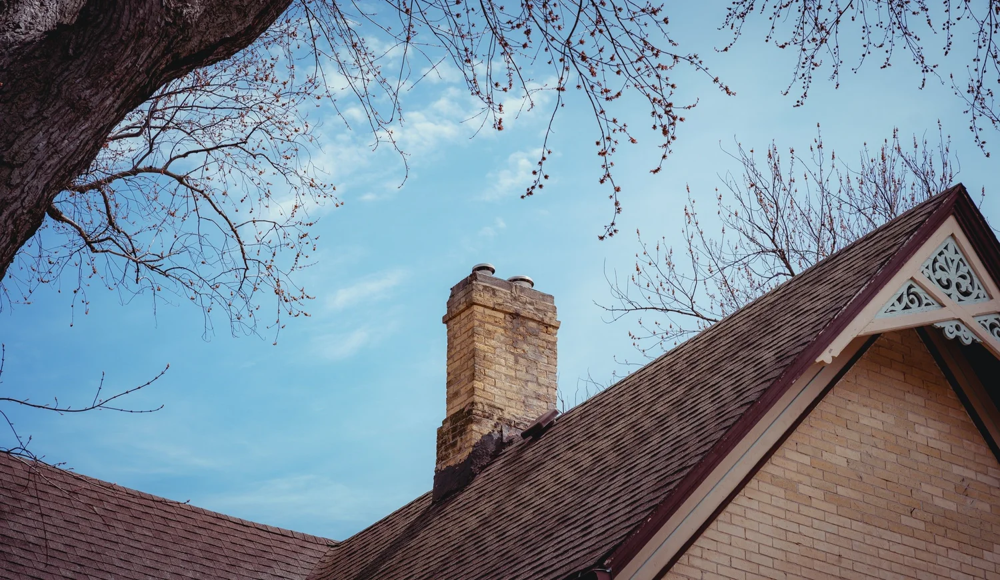

Routine evaluation
Included with a standard chimney cleaning. It is the starting point for understanding the current visible condition.

Chimney inspections
Chad uses an NFPA-compliant, 33-point inspection format to evaluate fireplaces, wood-burning stoves, and chimneys.
Starting service price
A Level 1 inspection is part of a Level 2. Cleaning is needed so the system can be examined beneath soot or creosote.Inspection levels
If you are unsure, call Chad and describe the fireplace, stove, property, or event that prompted the inspection.
Included with a standard chimney cleaning. It is the starting point for understanding the current visible condition.
A deeper inspection for a property transfer, change to the connected appliance, chimney fire, earthquake, relining, or uncertainty about the system.
Starts at $280Reserved for more extreme situations and may involve opening access to investigate a specific concern.
When Level 2 applies
Before the inspection
The chimney and firebox need to be cleaned so their condition can be examined beneath soot and creosote.
Property transfer, system change, fire event, or another concern.
Remove buildup that would hide the condition of the system.
Complete the appropriate inspection and note areas of concern.
Need an inspection?